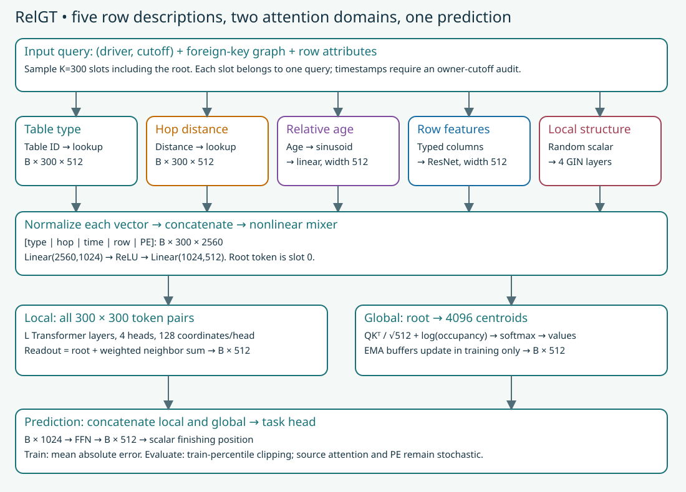
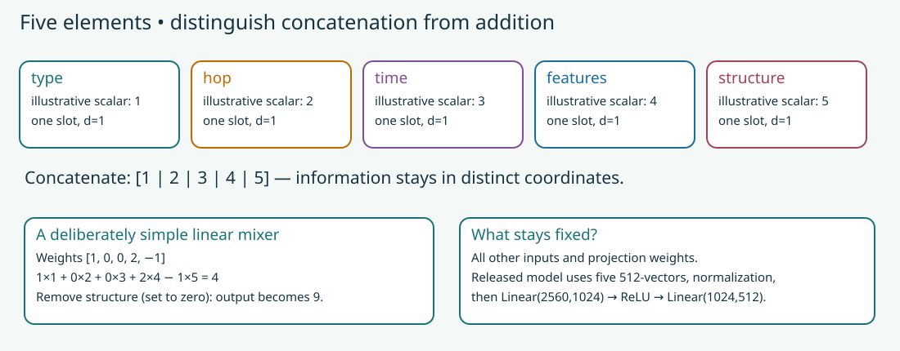
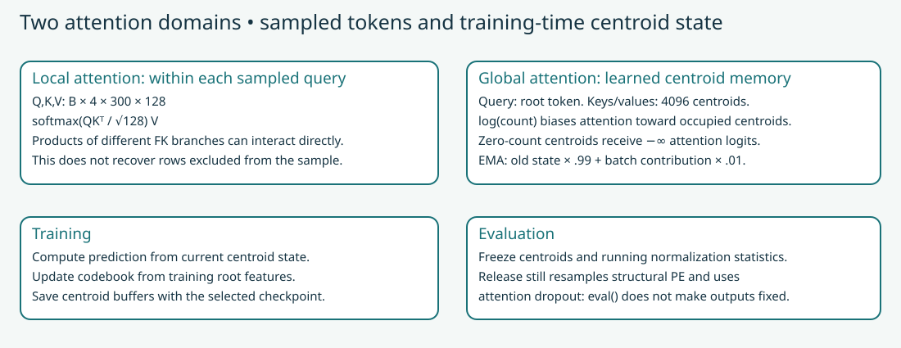
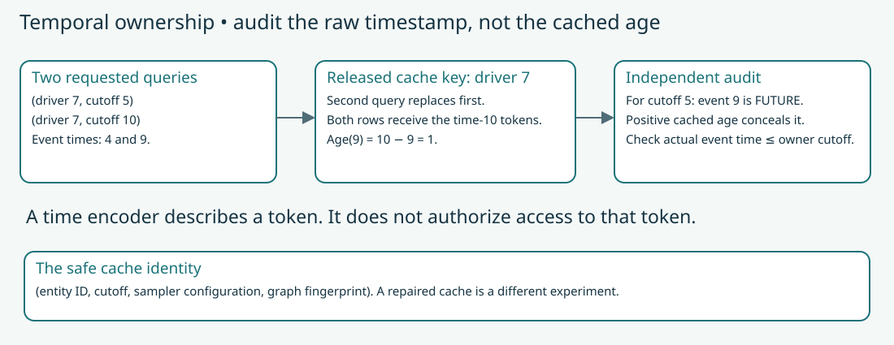

Year 4 · Quarter 3 · Lesson 145
RelGT: five elements, one relational token
See the idea · then trace the details
RelGT: make a relational neighborhood into tokens
A token needs both its content and its place in the relational context.
1Sample around the target
Target entity + typed, time-valid neighbors
The local relational neighborhood defines the input set. Temporal and ownership rules determine which records are eligible.
2Encode relational position
Content + type + position/time information
Token encodings preserve the structural roles that a plain unordered collection of row vectors would omit.
3Mix local and global context
Local token attention + global centroid attention
The local module mixes the sampled tokens. A global module reads learned centroid context; the task representation combines these routes before prediction.
Pause and predict: Why are ordinary feature vectors insufficient to describe this input?
They do not by themselves encode each record’s relational role, type or temporal position relative to the target.
Answer: They do not by themselves encode each record’s relational role, type or temporal position relative to the target.
Your tangible win¶
Trace one relational query through RelGT, then implement three contracts that the actual model, data audit and trainer use. You will be able to explain both what attention changes and what a successful reproduction must establish. This advances our mission: make relational-model claims defensible through visible computation and controlled evidence.
Recall before reading. What does an atomic route preserve when a many-to-many bridge would mix records? What is the difference between an entity and an (entity, cutoff) query? Why must validation choose a checkpoint before test results are interpreted?
1 · What the previous methods leave unresolved¶
RelGNN changes how messages travel along foreign-key paths. A foreign key identifies a row in another table. RelGNN's composite route moves information across a bridge without first collapsing every relationship into one shared state. ContextGNN uses a shared query graph to rank nearby candidates contextually and distant candidates through a separate item representation.
Neither mechanism asks every pair of sampled rows to exchange information directly. That is the new question here. Suppose two results belong to different races but share a driver. A graph layer normally follows the database's links. A Transformer can compare the two sampled result tokens directly. It must still know which table each row came from, when it occurred, and how it relates to the query. Otherwise an unordered bag of row attributes loses relational meaning.
In plain terms. RelGT widens communication inside a sampled context, while enriching each row's representation so the context retains relational clues. Attention cannot use rows that were never sampled, and a larger communication range is not a guarantee of better predictions.
The primary reading is Dwivedi et al., Relational Graph Transformer, §§3–4. The paper evaluates entity classification and regression; it excludes recommendation tasks. We return to F1 driver-position, so Lesson 144's full-catalog sponsor ranking objective does not carry over.
2 · Model architecture: a row becomes five vectors¶


A query is a driver ID and prediction cutoff. The target is the mean finishing position over the next 60 days. The released pipeline first builds a heterogeneous graph: rows are nodes, table names identify node types, and foreign keys define edges. It gathers neighbors up to two hops from each root and selects a fixed context. The release uses 300 slots including the root, rather than 300 neighbors plus a root. Sampling can repeat rows when the neighborhood is small.
Shapes. Let B be the number of queries in a batch, K=300 the slots per query, and d=512 the hidden width. Each of the following components produces a B × K × d array. One slot is one sampled row occurrence owned by one query.
- Table type. A learned embedding lookup maps a table ID to a vector. An embedding is a trainable row of numbers. It distinguishes, for example, a driver from a result.
- Hop distance. Another embedding represents distance from the root: zero for the root, one or two for graph neighbors. The source reserves hop three for global fallback samples; it is not a measured third-hop path.
- Relative time. The release computes age in days as
(cutoff − row_time) / 86400. Sinusoidal positional features, followed by a learned linear transformation, encode that number. Undated rows receive zero. Negative ages receive a learned mask vector. Masking an age does not remove the row's attributes. - Row attributes. Each table has a typed feature encoder and a four-layer residual network. Numerical, categorical and other supported columns become a common vector. A residual connection adds an earlier hidden state to a later transformation, helping information and gradients travel through the network. The release replaces nonfinite input tensor values before this encoder.
- Local structure. Each sampled occurrence gets a fresh random scalar. A projection and four residual GIN layers propagate these values along sampled edges. A GIN layer combines a node's own representation with a sum of neighbor representations, then transforms it with a neural network. The resulting vector carries connectivity information that type and hop alone cannot describe.
Each component is normalized separately. Layer normalization rescales coordinates within a vector. The release concatenates the components in the order type, hop, time, features, structure, producing 5d=2560 coordinates. Its mixing network maps 2560 → 1024 → 512, with a ReLU between the two linear layers. ReLU replaces negative values with zero.


Worked example. Use scalar components [1,2,3,4,5] and weights [1,0,0,2,−1]. The projection is 1 + 8 − 5 = 4. Setting only the structural component to zero changes the output to 9. Summing the five inputs first would lose which weight belongs to which component. This example isolates concatenation; it is smaller than the released nonlinear mixer.
TODO 1 — mix_five. Concatenate five equally shaped components and apply the supplied projection. Preserve gradients to every component. Your function is called inside the complete model, not only by an exercise checker.
Source distinction. Paper §3 writes a linear relative-time encoder and a single token projection. The pinned release uses sinusoidal time features and a two-layer mixer. Its random structure features are resampled on every forward call, including evaluation. We expose these differences rather than implying that the equations and release are identical. Encoder source.
3 · Local attention changes who can communicate¶
In plain terms. Every slot asks which other slots in its own query context contain useful information. It does not have to traverse the FK path again at every Transformer layer.
Each local layer projects tokens into queries, keys and values, written Q, K and V. A query-key dot product measures compatibility. Dividing by the square root of the per-head width controls its scale. Softmax exponentiates these scores and divides by their sum, producing nonnegative weights that sum to one. The layer computes softmax(QKᵀ / √128)V. Four heads perform separate comparisons; each head has 128 coordinates. This use of K for keys is distinct from the context-size symbol.
The attention matrix has 300 × 300 entries per query and head. Different queries do not attend to one another. Residual additions, normalization and a feed-forward network complete each layer. More layers repeat that computation; the released sweep uses one, four or eight.
Readout. After the final normalization, the source keeps the root vector and forms a learned weighted average of the other slots. It scores each neighbor jointly with the root, normalizes those scores over neighbors, then adds the weighted neighbor vector to the root. This produces one local B × 512 representation.
A repeated sampled row occupies multiple slots. That can change its total attention weight. Moreover, the released adjacency map keeps only the last slot for a duplicate row as an edge destination. Neither repetition nor arbitrary slot order should be described as a faithful copy of a unique-node induced graph.
4 · Global attention reads a training-time memory¶


A centroid summarizes a cluster of root representations. RelGT stores 4,096 centroids and updates them using exponential moving averages (EMA): each update retains most old state and adds a small contribution from the current training batch. The decay is 0.99. These are buffers updated by clustering, not ordinary embedding parameters trained directly by gradient descent.
The root attends to centroid keys and values. The released global branch scales scores by √512, and adds log(centroid occupancy). Occupancy counts the assignments in its node-to-centroid buffer. A zero count gives a negative-infinite logit, removing that centroid's attention weight. This buffer is initialized randomly; it must not be presented as an exact census of historically observed database rows.
The local and global vectors are separately normalized, concatenated to B × 1024, and passed through a feed-forward network and scalar prediction head. Training minimizes mean absolute error (MAE): the mean of |prediction − target|. Evaluation clips predictions to the training targets' second and ninety-eighth percentiles, following the source.
State boundary. Centroid updates happen during training; evaluation freezes centroid and normalization state. Save those buffers with a checkpoint. However, the released scaled-dot-product attention receives its dropout probability unconditionally. Dropout randomly removes contributions; it remains active in this local attention operation during evaluation. Along with resampled structural features, this means repeated predictions can differ even after model.eval().
5 · A correct encoder cannot repair the wrong query context¶


Worked example. Driver 7 has queries at times 5 and 10. An event occurs at time 9. The event is eligible for the later query but unavailable to the earlier one. If a cache stores only driver 7 → context, its later entry overwrites the earlier context. Both queries can then receive the time-9 event. The cached age is 10−9=1, a positive number, even when the actual owner cutoff is 5.
The original local_nodes_hetero returns a dictionary keyed by node type and entity ID, omitting cutoff. Its HDF5 writer reuses that entry for every repeated entity in the chunk. This is a source behavior, not merely a hypothetical bug in our adaptation. A separate fallback branch samples globally when a root has no neighbors, without filtering the fallback rows by cutoff.
TODO 2 — audit_tokens. Check raw timestamps against the cutoff of their actual query row. Reject duplicate (entity, cutoff) keys. Return violating (query row, token slot) pairs. Missing timestamps remain an explicit availability limitation. Positive cached ages are insufficient evidence.
A corrected cache would use full query identity and a fingerprint of the sampler and graph. A corrected fallback would filter candidates before sampling. Those changes are scientifically useful, but they create a different pipeline. This lesson preserves the original behavior for the audit and does not pass off a repaired score as the published experiment.
6 · Reproduce the experiment, then defend the boundary¶
The named target is RelGT v1 Table 1, rel-f1/driver-position, published test MAE 3.9170. The paper's RDL GNN comparator is 4.022. Both are published numbers, not fresh measurements from this lesson. They correspond to a descriptive relative reduction of about 2.61%; one task does not establish general superiority. Table 1.
Held fixed: full task population, released graph preparation provenance, width 512, 300 slots, 4,096 centroids, batch 256, Adam learning rate 0.0001, weight decay 0.00001, and seed 0. Varied: three depths {1,4,8} crossed with three dropout values {0.3,0.4,0.5}: nine configurations. Each chosen dropout value is used for both feed-forward and attention dropout. Each configuration requests 100 epochs. The release parses warmup steps but does not apply a warmup schedule in this training loop. Gradient norms are clipped to one.
TODO 3 — last_validation_min. Select the last epoch attaining the smallest validation MAE. The source uses <=, so [4,3,3,5] selects epoch 3, not epoch 2. This differs from earlier lessons' first-minimum contract. Test never chooses a checkpoint or configuration. The full runner declares its additional cross-configuration selection rule because a historical aggregation script is unavailable.
| Evidence | Training queries | Validation queries | Future token occurrences |
|---|---|---|---|
| Full train token audit | 7453 | — | 569,502 |
| Full val token audit | — | 499 | 21,368 |
| Full test token audit | — | — | 0 |
Full selected reproduction: INCOMPLETE. The source token cache fails the temporal contract. The full test cache contains 760 queries; zero future-token violations there does not repair leaked training/validation contexts. All 8,712 labels were independently rebuilt. Graph preprocessing is reused under verified hashes from L143, not freshly regenerated here.
Depth 1 timing pilot: 768 training queries, 256 validation queries, partial validation MAE 9.084049. Test NOT_RUN. This is invalid-context source replay for timing, not benchmark evidence. Real-batch original-model maximum output difference: 1.91e-06.
Cost decision: STOP. Temporal audit FAIL independently blocks clean reproduction. The three shallow 100-epoch configurations alone project USD 26.80; all nine at that same measured shallow speed project USD 80.41, before final evaluations and overhead. Deeper pilots and full fits were not dispatched. Estimates use linear batch scaling, not measured full epochs.
Historical identity NOT_ESTABLISHED; whole paper NOT_RUN; live Colab/deployment NOT_CHECKED; learner PENDING_WRITTEN_DEFENSE.
The default notebook runs a small complete-network forward/backward fixture, source parity checks, original-cache failure probes, and independent audits of saved author evidence. Its small synthetic network is mechanism evidence. The complete released-scale trainer is visible after the exercises, with a separate guarded execution gate. Running the default notebook is not running nine full experiments.
The US$10 total cap includes preparation, pilots, validation, failed attempts and overhead. We reserve before launching workers and retain failed attempts. If either temporal validity or remaining budget fails, the complete reproduction stays INCOMPLETE; the runner and evidence still ship. See the exact protocol and commands.
Scope check. Source parity tests software agreement. A numerically close MAE tests only a score difference. Historical reproduction additionally needs matching data, preprocessing, cache, selection and environment. No result here establishes real-world attribute availability, whole-paper reproduction, deployment behavior or learner mastery.
Lab and exit defense¶
Open the student notebook, executed solution, or prepared notebook HTML. Use the one-page reference after attempting retrieval.
- Complete all three TODOs and run their CHECK cells. Explain why each contract lies on a real execution path.
- Trace one
B × 300 × 512token array through local readout, global attention and the head. Distinguish EMA buffers from gradient-trained parameters. - Explain the cache overwrite with actual timestamps. Propose a repair and state why its result needs a new experiment label.
- Defend the reproduction verdict using the complete schedule, temporal audit and cost ledger. Identify which evidence was executed by the author and which work you personally completed.
Spaced return. Tomorrow, reconstruct the five components without notes. In one week, explain why eval() and a positive age do not each prove what their names might suggest. Ask the teaching agent to review your code, tensor trace and written defense; follow-up questions are part of this lesson.
Carry this forward. Use the access and selection audits in Lesson 146. A GNN–transformer comparison is meaningful only after specifying what each model saw and how its result was chosen. Continue to Lesson 146.